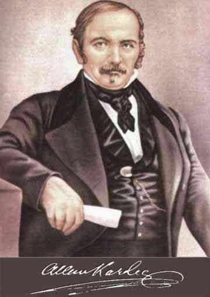

Inicio
Bienvenido a esta página dedicada al estudio del espiritismo codificado por Allan Kardec, con enfoque en Monterrey, Nuevo León. Exploraremos sus obras, pensamientos y el legado que dejó en el mundo espiritual, especialmente en México.
Biografía de Allan Kardec
Allan Kardec, nacido como Hippolyte Léon Denizard Rivail, fue un educador francés que se dedicó al estudio de los fenómenos espirituales. En el siglo XIX, codificó el espiritismo a través de una serie de obras fundamentales que aún hoy son referencia en el estudio espiritual.
Obras Principales
El Libro de los Espíritus
Obra fundamental publicada en 1857 que introduce los principios del espiritismo. Contiene más de 1,000 preguntas y respuestas sobre la vida espiritual, la moral y el destino del alma.
📥 Descargar El Libro de los Espíritus
El Libro de los Médiums
Publicado en 1861, esta obra es una guía práctica sobre la mediumnidad. Explica cómo se manifiestan los espíritus y cómo desarrollar la comunicación espiritual de forma segura y ética.
📥 Descargar El Libro de los Médiums
El Evangelio según el Espiritismo
Publicado en 1864, interpreta las enseñanzas morales de Jesús desde la óptica espiritista. Promueve la caridad, la humildad y el amor al prójimo como pilares del desarrollo espiritual.
📥 Descargar El Evangelio según el Espiritismo
El Cielo y el Infierno
Publicado en 1865, esta obra examina la justicia divina según el espiritismo. Presenta relatos de espíritus sobre su experiencia después de la muerte, ilustrando las consecuencias morales de los actos humanos.
📥 Descargar El Cielo y el Infierno
La Génesis
Publicado en 1868, esta obra aborda la creación del universo, los milagros y las predicciones desde la perspectiva espiritista. Profundiza en la relación entre ciencia y espiritualidad.
Principios del Espiritismo
El espiritismo enseña que los espíritus son seres inteligentes que sobreviven a la muerte física. Promueve la comunicación con el mundo espiritual, la reencarnación, y la evolución moral como camino hacia la perfección.
Espiritismo en Monterrey
En Monterrey, el espiritismo ha encontrado seguidores comprometidos con el estudio de las enseñanzas de Allan Kardec. Existen grupos de estudio, centros espiritistas y actividades dedicadas al desarrollo espiritual y moral.
Una de las escuelas más reconocidas es la Escuela de Estudios Psíquicos Fuerza, Luz y Verdad, ubicada en la Colonia Arturo B. de la Garza, calle Capitán Diego Rodríguez #1929, Monterrey, Nuevo León.
Escuelas Espirituales en Monterrey
Las escuelas espirituales en Monterrey se enfocan en el estudio profundo del espiritismo, la filosofía kardecista y el desarrollo moral. Estas instituciones ofrecen charlas, grupos de estudio y actividades abiertas al público.
Escuela de Estudios Psíquicos Fuerza, Luz y Verdad
Esta escuela, con más de 80 años de trayectoria, se dedica a la enseñanza del espiritismo y el desarrollo psíquico. Ubicada en la Colonia Arturo B. de la Garza, calle Capitán Diego Rodríguez #1929, Monterrey, Nuevo León, México.
Cada domingo, la jornada espiritual inicia a las 7:00 a.m. con una oración dedicada a los difuntos. Posteriormente, se realiza una meditación profunda, seguida de la recepción del mensaje espiritual. Finalmente, se lleva a cabo una sesión de sanación guiada por la fuerza indígena.
Guardia Espiritual (24 horas)
La siguiente guardia representa la presencia espiritual continua que acompaña las labores de sanación y enseñanza en la escuela:
| Hora | Entidad Espiritual |
|---|---|
| 00:00 – 01:00 | Hermana Carmen Allende Pérez |
| 01:00 – 02:00 | Hermana Ana Morgan Godinez |
| 02:00 – 03:00 | Hermana Ma. de la Luz Martínez Allende |
| 03:00 – 04:00 | Hermano Joaquín Escobedo Osorio |
| 04:00 – 05:00 | Hermano Rusbel Fernando González Cantú |
| 05:00 – 06:00 | Hermano Antonio Alma Luz |
| 06:00 – 07:00 | General Doroteo Arango Arámbula |
| 07:00 – 08:00 | Hermano José de Jesús Rubio |
| 08:00 – 09:00 | Hermana José María de la Pradera |
| 09:00 – 10:00 | Hermano Indio Isaac |
| 10:00 – 11:00 | Hermana Gitana Luna |
| 11:00 – 12:00 | Hermano Indio Iztuk |
| 12:00 – 13:00 | Hermano Juan de la Montaña |
| 13:00 – 14:00 | Hermano Leonardo Mendoza |
| 14:00 – 15:00 | Hermano Gerónimo Piel Roja |
| 15:00 – 16:00 | Hermano Gitano Bruno |
| 16:00 – 17:00 | Hermano Dr. Benito Poza |
| 17:00 – 18:00 | Hermano Jacobo Rubio |
| 18:00 – 19:00 | Hermano Dr. Antonio López |
| 19:00 – 20:00 | Hermana Esperanza Cuevas de la Paz |
| 20:00 – 21:00 | Hermano Indio José |
| 21:00 – 22:00 | Hermana Gitana Candelaria |
| 22:00 – 23:00 | Hermano Fray Martín Castillo |
| 23:00 – 00:00 | Hermano Indio Tamachule |
Ubicación en el mapa:
Preguntas Frecuentes
Respuestas a algunas de las dudas más comunes sobre el espiritismo y su práctica en Monterrey.
-
¿Quién es Dios?
Dios es la inteligencia suprema causa primera de todas las cosas, él es soberanamente justo y bueno, él es todo poderoso, él es amor. -
¿Qué es el espiritismo?
Es una doctrina filosófica y espiritual codificada por Allan Kardec que estudia la naturaleza, origen y destino de los espíritus, así como su relación con el mundo corporal. -
¿El espiritismo está relacionado con alguna religión?
No es una religión, aunque respeta todas las creencias. Es una filosofía espiritual que busca el entendimiento del alma y su evolución. -
¿Qué es La Rencarnación?
La reencarnación es el retorno del espíritu a un cuerpo humano para progresar y alcanzar la perfección a través de múltiples existencias. En pocas palabras es vivir varias vidas siendo el mismo espiritu, lo unico que cambia es el cuerpo. -
¿Qué es el Karma?
El karma se entiende como la ley de causa y efecto que rige nuestras acciones y sus consecuencias, tanto en esta vida como en las siguientes; en pocas palabras todo el mal que hagamos lo vamos a tener que reparar tarde que temprano, sea en esta vida u otra. -
¿Cuál es la finalidad de vivir en la Tierra?
La vida en la Tierra representa una oportunidad de crecimiento espiritual. Venimos a reparar las decisiones equivocadas que hemos tomado en existencias anteriores —lo que muchos conocen como “pagar el karma”— y a avanzar en nuestra evolución moral.
Este proceso incluye también el ejercicio activo de la caridad: brindar un consejo sincero, escuchar con empatía, pedir perdón, perdonar, y ayudar a otros en su camino. Cada gesto de amor y comprensión contribuye a nuestra transformación como espíritus en busca de la perfección. -
¿Se necesita tener habilidades psíquicas para participar?
No. El espiritismo promueve el estudio, la reflexión y el desarrollo moral. Las habilidades psíquicas pueden desarrollarse con el tiempo, pero no son un requisito. -
¿Hay actividades para niños o jóvenes?
Sí. Algunas escuelas espirituales ofrecen talleres y actividades adaptadas para distintas edades, fomentando valores y el desarrollo espiritual desde temprana edad. -
¿Dónde puedo asistir a una charla o grupo de estudio?
Puedes visitar la Escuela Fuerza, Luz y Verdad en la Colonia Arturo B. de la Garza. También puedes escribirnos a info@espiritismo-monterrey.org para conocer el calendario de actividades.
Espiritistas Célebres
Estos pensadores y médiums han dejado una huella profunda en el desarrollo del espiritismo a nivel mundial:
Chico Xavier (1910–2002)
Francisco Cândido Xavier fue un médium brasileño que psicografió más de 400 libros dictados por espíritus. Su obra promovió la caridad, la humildad y el amor al prójimo. Es considerado uno de los mayores exponentes del espiritismo moderno en Brasil.
Camille Flammarion (1842–1925)
Astrónomo y escritor francés, Flammarion fue un defensor del espiritismo desde una perspectiva científica. Escribió sobre la inmortalidad del alma y la comunicación con los espíritus, buscando armonizar ciencia y espiritualidad.
Léon Denis (1846–1927)
Filósofo francés y discípulo de Allan Kardec, Denis profundizó en los aspectos morales y filosóficos del espiritismo. Sus obras como “Después de la Muerte” y “El Problema del Ser y del Destino” son pilares del pensamiento espiritista.
Amalia Domingo Soler (1835–1909)
Escritora y poetisa española, conocida como “la gran dama del espiritismo”. Fue una defensora de los derechos de la mujer y del desarrollo espiritual a través del estudio y la reflexión. Su obra “Memorias de una mujer espiritista” es ampliamente reconocida.
Foro Espiritual
Comparte tus dudas espirituales y recibe orientación.